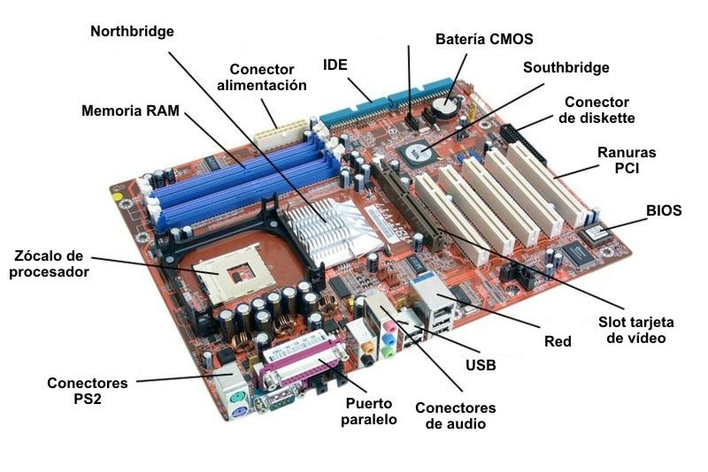
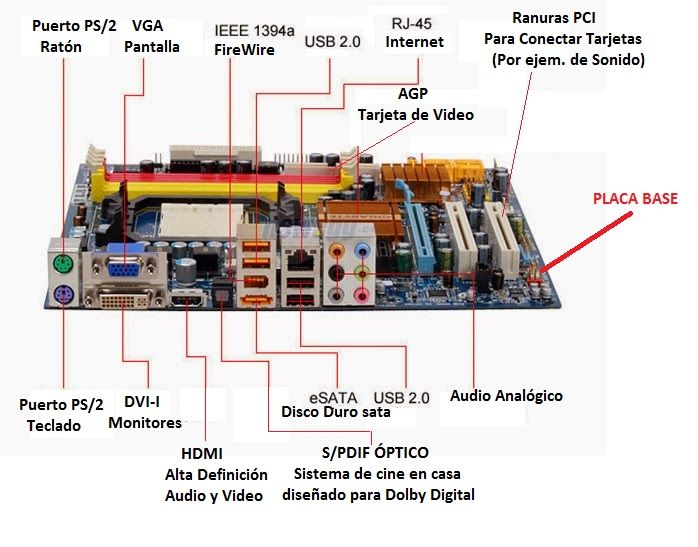

Placa Madre
Los componentes del Hardware no funcionan si no van conectados a algo que transfiera la informacion que contienen,y de eso se encarga la placa Madre,de servir como ruta de comunicacion entre los componentes.
Partes
Zocalo o Socket del procesador
Lo principal o la pieza mas fundamental de la placa madres es el zocalo o socket del procesador. Es en donde se conecta el procesador.Existen dos tipos de sockets,socket AM4 que es para procesadores AMD cona rquitectura ZEK y socket LGA1151 que para procesadores Intel.
Ranuras Ram
La RAM es la memoria que almacena datos que se estan utilizando en el momento. Los slots de ram de la placas estan diseñados para cierto tipo de especificaiones de la ram como la frecuencia y la VRAM. Ademas de eso si la placa no es compatible con las especifiaciones esta no funcionara correctamente.
Slots PCI
Son los puertos en donde se conectan las tarjetas,ya sea tarjetas grafica o de video
Alimentacion
Conexion 20 o 24 pines
Ranura porn donde se conecta el cable que alimentara a la palca madre,el cable viene con la fuente de alimentacion
CPU FAN
Ranura por donde el cable de alimentacion del CPU entra,se localiza en un radio cercano al procesador
Puerto 4 pines
Puerto por donde va conectador el disipador o cooler,tambien exiten mas puertos por otras zonas de la placa en donde podemos conectar ventiladores para el enfriameiento del ordenador
Northbridge
Conocido tambien como chip controlador de PCI,es un microprocesador encargado de la trnasferencia y lectura de datos de los puertos PCI. Tambien exitste otro chip encargado de los puertos usb
BIOS
Un pequeños chi que contiene un softeare prefabricado,el software contiene una interfaz para los ajustes de la placa y ver su estadoa actual
Bateria CMOS
En esta pila se almacenan datos como las configuraciones de la BIOS y la hora del pais en donde este
Conexiones
Contamos con varias conexiones a distintos componentes y/o dispositivos externos. Nos centraremos en los puertos usb
Como se aprecia en la imagen las placas cuentan con distintos tipos de conexiones que podemos clasificar en tipos:
-
Conexion a Video
- DVI-I: La antigua conexion entre la GPU o placa base y los monitores
- Puerto HDMI Y VGA:Son los puertos de conexion a los monitores,el VGA ya tiene un tiempo estando activo,pero el HDMI es una conexion mas moderna y mejor que el VGA.
- Conexion a Perifericos
- Puerto PS/2:Antigua conexion de teclado y mouse
- Puerto USB 2.0:Conexion de teclado,mouse,pendrives y cables usb.Los cables usb tienen muchas conexiones a una variedad de dispositvos como la conexion a moviles y luces
- Puerto de Audio:Conexion a audifonos y microfonoes.Tambien a dispositivos controladores de audio.
- Puerto de conexion a Red:Es por donde se conecta el cable de red,con el cable de red podes tener conexion a redes,ya sea domestica,metropolitana o global.
- Puertos Sata
- Son los puertos que comunican y transferien la informacion del disco duro,ssd y lector dvd